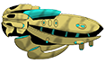
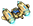

Simple Instructions:
Move the 
using the
 keys
keys and move it like you just don't care.
You may also begin deploying  by pressing the .
** Update Log:
v1.1 - Added Gravity & Angular Velocity Movement.
v1.2 - Changed Movement keys & added ammo deployment.
v2.0 - Revamped Interface and Units
Submitted by: Chin Michael Ang
Year & Section: BSIT IV - A